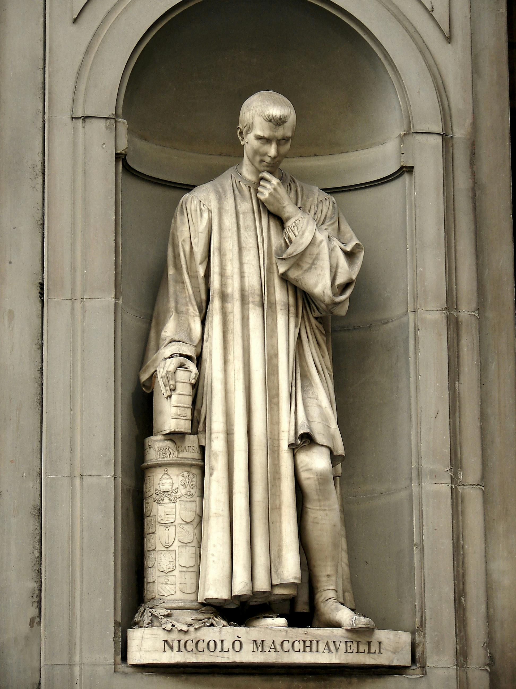
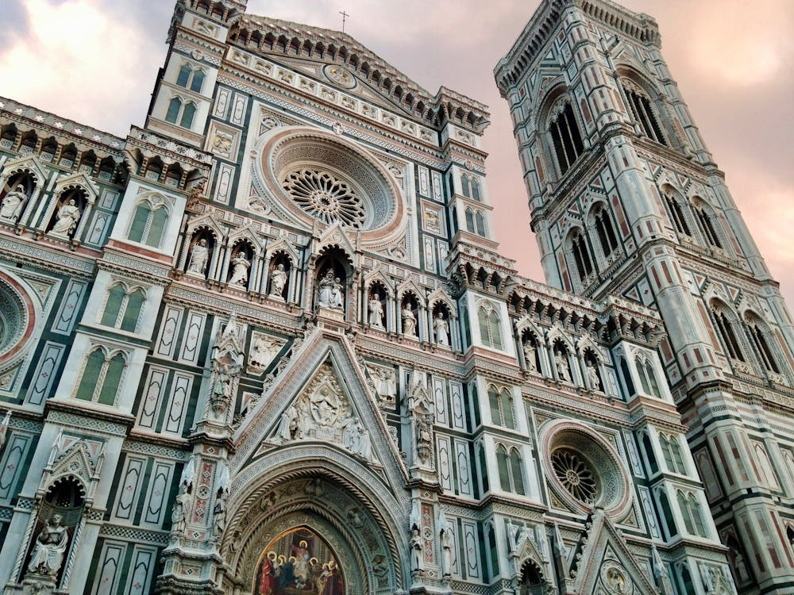

Visit Florence
Explore
Events
Contact
This website is awesome
This website has some subtext that goes here under the main title. It's a smaller font and the color is lower contrast
Sign up
The wonders of Florence.
The Cathedral of Saint Mary of the Flower, known as the Duomo.

A statue of Niccolo Machiavelli, a prominent Florentine diplomat and author of 'The Prince'.

The beautiful facade of the Duomo and Giotto's Campanile.
Michaelangelo's David in the Academia Gallery of Florence.
A man who is used to acting in one way never changes; he must come to ruin when the times, in changing, no longer are in harmony with his ways.
Niccolo Machiavelli
Visit Firenze! It's time!
Sign up for info on exclusive vacation packages to Florence.
Sign up